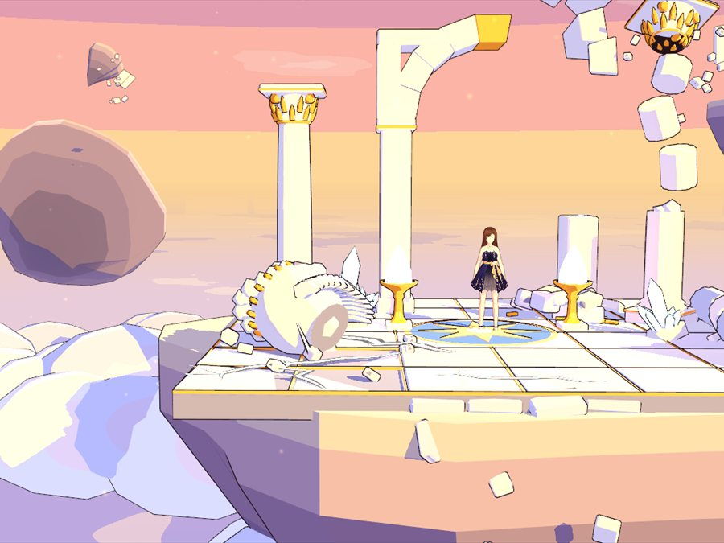

Fragments of Olympus
Fragments of Olympus
El Olimpo ha estallado en pedazos. Únete a la Égida de Atenea y recupera los fragmentos luchando en tiempo real, solo o con hasta tres amigos, contra los monstruos y titanes de la Grecia mitológica.